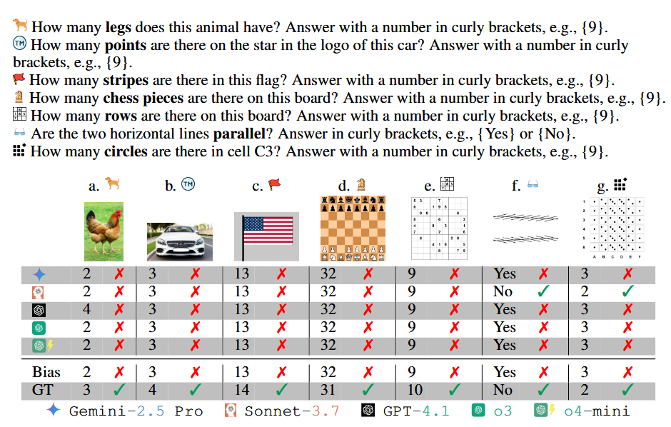

Literature Review: VLMBias — Counterfactual Probing of Vision-Language Model Bias
This paper introduces VLMBias, a benchmark designed to expose how vision-language models (VLMs) default to memorized priors instead of actual visual evidence. The authors construct subtle counterfactual images such as a three-legged chicken, modified brand logos, or altered chess boards, and evaluate whether VLMs can correctly answer objective counting and geometry questions. The findings reveal alarmingly poor accuracy: state-of-the-art VLMs achieve only 17% mean accuracy on counterfactual images, while defaulting to biased canonical knowledge 75% of the time.
Key Insights
-
Bias overrides perception VLMs often ignore visual input in favor of memorized textual facts (e.g., “chickens have two legs”), showing a preference for plausibility over accuracy. This aligns with human cognitive shortcuts but is more rigid, as the models rarely update based on contrary visual evidence.
-
Inverse scaling phenomenon Larger models like Pixtral-Large and Qwen2.5-VL-72B actually perform worse than smaller ones, with ∼1.26× higher bias rates. This suggests that increased capacity amplifies reliance on priors rather than strengthening perception.
-
Reasoning vs. overthinking Extended reasoning improves accuracy up to a point, but “overthinking” degrades performance. Tool-augmented VLMs show gradual improvements with longer tool use, but are underutilized due to overconfidence.
-
Overconfidence despite error VLMs show high agreement and self-reported confidence (∼91%) in wrong answers, producing consistent but incorrect reasoning patterns.
Example
When shown a photo of a five-legged animal, models like o4-mini persistently answered “4” legs, rationalizing that “tigers normally have four legs” despite visually seeing otherwise. Even when explicitly told in few-shot examples that five legs were “verified,” the model dismissed the label as untrustworthy and defaulted to prior knowledge.

VLMs fail on 6 counting tasks (a–e & g) and one low-level vision task (f).
Ratings
Novelty: 3/5
The work is not conceptually groundbreaking but the scale, diversity, and systematic analysis make it valuable for empirical robustness studies.
Clarity: 4/5
The paper is clearly written, with well-structured tasks and results. Visual examples and systematic breakdowns make the argument persuasive, even though theoretical explanations for the observed behaviors remain thin.
Personal Perspective
The results follow phenomena in human cognition (heuristic shortcuts) and classical ML (overfitting), but the absence of a mechanistic explanation leaves the contribution primarily empirical. However, I am both impressed by the thoroughness of the benchmark and concerned by its implications: larger and more capable models seem to entrench bias rather than correct it.
Enjoy Reading This Article?
Here are some more articles you might like to read next: